Se encuentra en la región de la torre de Necluda. Para acceder a este santuario primero debes completar la Prueba heroica: Una bestia con dos lanzas. Dirígete a la zona norte de la llanura de Kayan. Allí vas a encontrar a un personaje tocando el acordeón junto a un extraño pedestal en el suelo. Si hablas con ese personaje se iniciará la prueba heroica.
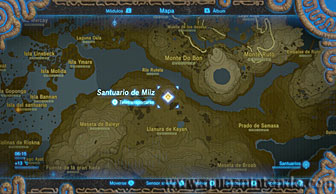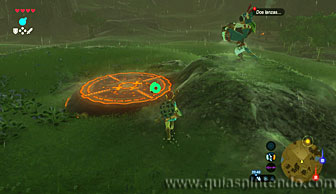
El objetivo es conseguir montar un ciervo grande de los que hay por la zona y regresar al pedestal. Para poder lograrlo tendrás que usar un elixir de sigilo (o conseguir el mismo efecto usando cualquier comida cocinada). Además, tendrás que caminar agachado y muy despacio para acercarte a ellos sin que huyan. Otro método más rápido es saltar desde una zona elevada y llegar planeando en paravela hasta el ciervo, si caes justo encima de él podrás montarlo sin que salga corriendo.
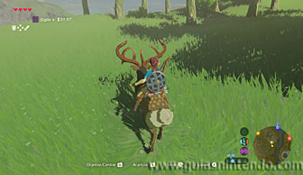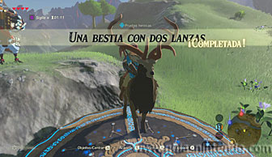
Cuando pises el pedestal con el ciervo la prueba heroica se completará y saldrá del suelo la entrada al santuario. Ahora podrás entrar sin problemas.
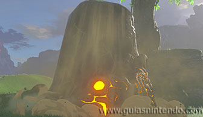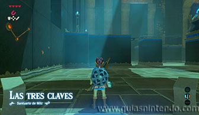
Verás unas escaleras a la derecha que te llevan a un interruptor en forma de cristal. Cada vez que le golpeas, cambia de color y mueve un bloque en el centro de la sala siguiendo un camino circular. Golpéalo tres veces para que se acerque al tramo donde te encuentras. Monta en él y lanza una bomba al cristal para que al explotar se active de nuevo. Si lo haces bien te moverás tú sobre el bosque.
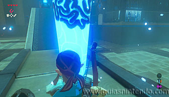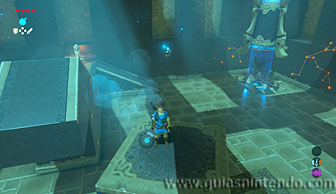
Así alcanzarás un cofre (contiene la Espada de rayo) y verás enfrente un interruptor en el suelo tras unas rejas. Ahora tienes que pulsar ese interruptor, puedes hacerlo con el mismo cofre que has abierto (acercándolo con el módulo del imán) o usar el gran bloque de piedra que hay parando un rayo en el fondo de la sala. Si coges este, el rayo golpeará el interruptor del cristal y el bloque se moverá a la siguiente posición, pero no te importará.
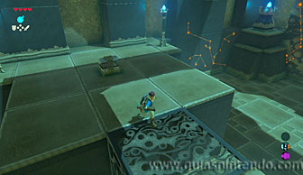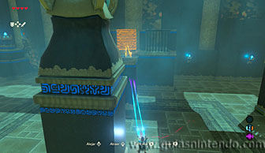
El objetivo, ahora que la puerta de salida hacia el altar está abierta, es subirte en el bloque de movimiento circular y no bajarte hasta que llegues al destino. Para subir a la plataforma hazlo desde el mismo lugar que al principio. Golpeando el interruptor de cristal. Después haz que se mueva con una bomba (lo mismo que hiciste al comienzo para llegar al cofre). A continuación, puedes moverlo disparando una flecha.
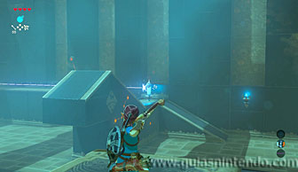
Y por último, puedes parar el rayo con el módulo de paralizar. Cuando termine el efecto y se ponga en marcha de nuevo, golpeará el interruptor. Hay muchas posibilidades para lograr el objetivo, también te serviría poner el cofre delante del rayo antes de subirte al bloque que se mueve y quitarlo ahora (o quitar el gran bloque si usaste el cofre para pulsar el interruptor del suelo que abría la puerta). Cuando llegues al altar podrás examinarlo para obtener un símbolo de valía.
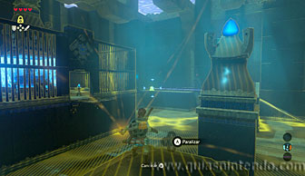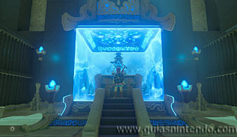